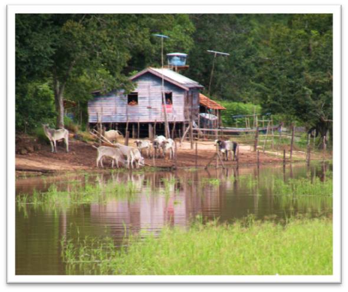
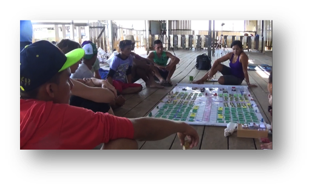
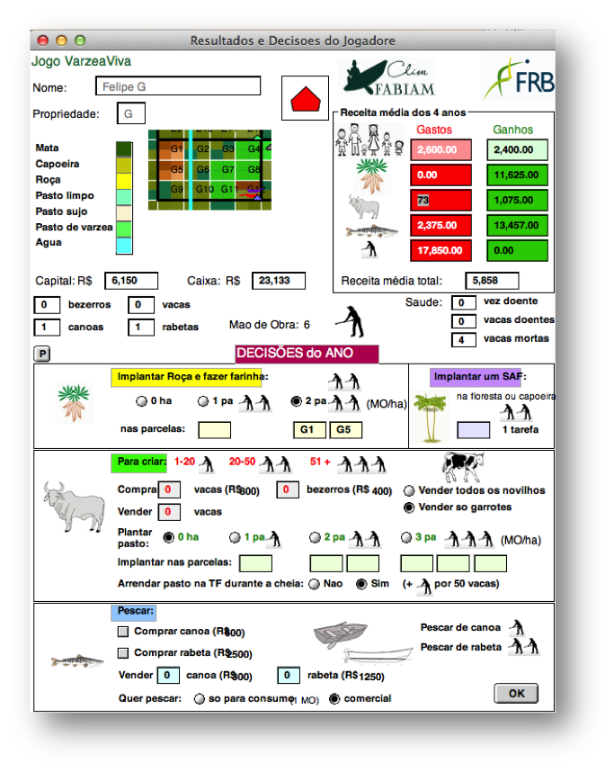
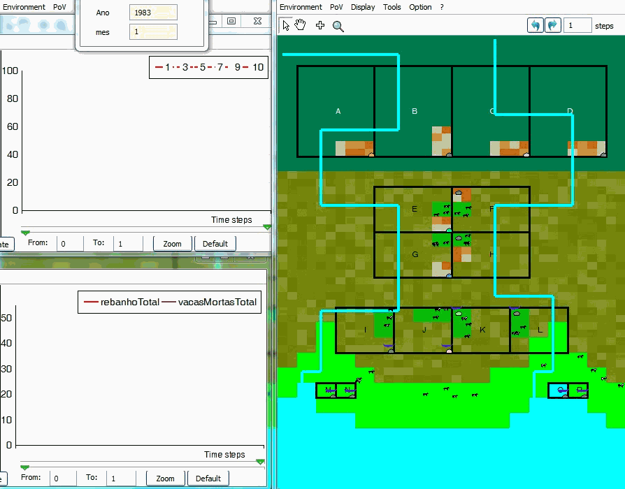

|
VarzeaViva
Livelihoods of local communities in an Amazonian floodplain
coping with Global Changes
From Role-Playing Games to hybrid simulations to involve local
stakeholders in a participatory prospective study at a territorial
level

|
- Marie-Paule Bonnet (IRD - UnB, Brasilia)
- Pierre BOMMEL (Cirad - UCR, Costa Rica),
- Emilie COUDEL (Cirad - Embrapa CPATU),
- Eva HAENTJENS (Cirad),
- Cleber Nunes KRAUS (Universidade de Brasilia - UnB,
- Gustavo MELO, (CIRAD - UFRj),
- Stephanie NASUTI (Universidade de Brasilia - UnB),
- Christophe Le Page, (CIRAD - UnB)
|
Purpose of the project
Thanks to their seasonal floods that recycle nutrients, the
Amazonian floodplains are among the most productive and
diversified ecosystems in the world. Since the pre-Columbian
period, populations have settled in the floodplains and developed
agricultural activities and fishing. They have always coped
natural variations, between flood and dry seasons. However, the
rhythm and the amplitude of these floods are disturbed nowadays,
resulting in great uncertainty for the populations.
Biophysics and social scientists have joined hands to help these
populations better improve their resilience to such changes.
To address this, we first turned the perspective around the
preoccupations and strategies of local populations and
collectively discussed possible future scenarios. Using a
role-playing game (RPG) as a dialogue’s interface, an agent-based
model (ABM) was progressively built. This required finding common
points of interest, and reformulating scientific knowledge to be
meaningful for local actors.
 |
A RPG session with
fishermen at Piedade |
This ABM is now a hybrid model allowing the users to
interact with the simulation: they take seasonal decisions
on agriculture, fishing and animal husbandry, which are
virtually performed by their avatars into the model. Then,
by integrating these inputs and the river level forcing
variables, the simulation calculates the annual evolution of
the territory and provides production outputs.
Moving from RPG
to hybrid simulation enables sophisticated calculations and
scenarios on a broader timeframe. In return, this requires
thinking carefully about the ways to interact with the
simulation while providing spontaneous and informative
exchanges between participants. This is the goal of our
current research that aims to better understand and discuss
the impacts of current practices in the long term. |
 |
An example of simulation

VarzeaViva is an hybrid ABM that has been designed and used in
the Clim-Fabiam project, funded by FRB,
the Foundation for Research on Biodiversity.
Software
You can download
the Cormas model source code. A standAlone version is also
available: varzeaViva.exe
See also this paper
presented at ICCB 2015: Bommel P., Bonnet M.P., Coudel E.,
Haentjens E., Nunes Kraus C., Laques A.E., Melo G., Nasuti S.,
Souza Nogueira I.(2015). From
scientific models to Companion Modelling: engaging a dialogue
with local actors in an Amazonian floodplain about biodiversity
management at a territorial level. ICCB: 27th
International Congress for Conservation Biology - 4th European
Congress for Conservation Biology. August 2-6 2015, Montpellier -
France
For more information, contact
the corresponding author
|
|